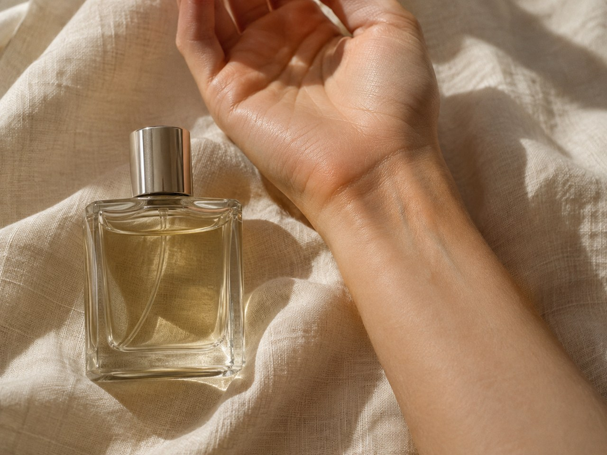

Ingredientes
Almizcles: el perfume que casi parece piel
De los matices limpios a los cálidos y sensuales, una familia más amplia de lo que parece.

Una palabra para muchos olores
En perfumería actual, almizcle suele referirse a una familia de materiales aromáticos, en su mayoría sintéticos, con perfiles muy diversos. Algunos recuerdan a ropa limpia o jabón; otros aportan calidez, suavidad o una impresión de piel. No existe un único olor de almizcle.
De la tradición a las moléculas modernas
Históricamente se utilizó almizcle de origen animal, pero la perfumería moderna recurre principalmente a alternativas sintéticas. Estas permiten construir perfiles variados sin depender de aquella materia. El uso de una molécula de síntesis no convierte automáticamente una fragancia en menos creativa ni menos valiosa.
El efecto segunda piel
En dosis adecuadas, los almizcles ayudan a redondear otros acordes y a crear una sensación íntima y cercana. En perfumes llamados skin scents, el aroma parece mezclarse con la persona que lo lleva, aunque esa impresión sigue siendo una construcción perfumística.
Por qué algunas personas apenas los huelen
La sensibilidad a determinadas moléculas almizcladas varía entre personas. Es posible que alguien perciba claramente un perfume y otra persona apenas note una parte de su estructura. Si te ocurre, no significa necesariamente que el producto esté defectuoso: tu percepción puede ser distinta.
Comentarios
Los comentarios se guardan únicamente en este navegador y no se comparten con otras personas.